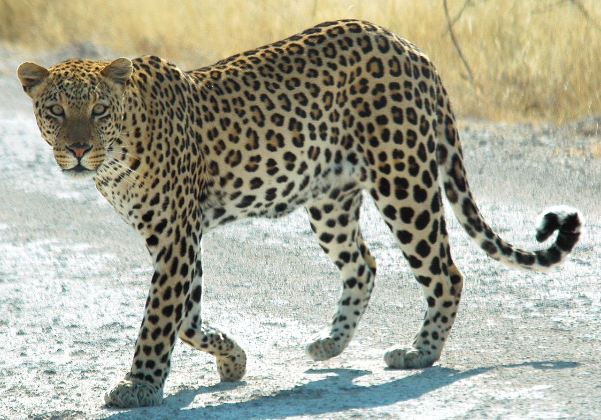

|  |
The Leopard
The promising predator of the jungle
The leopard (Panthera pardus) is one of the five extant species in the genus Panthera, a member of the cat family, Felidae.[4] It occurs in a wide range in sub-Saharan Africa, in some parts of Western and Central Asia, Southern Russia, and on the Indian subcontinent to Southeast and East Asia. It is listed as Vulnerable on the IUCN Red List because leopard populations are threatened by habitat loss and fragmentation, and are declining in large parts of the global range |